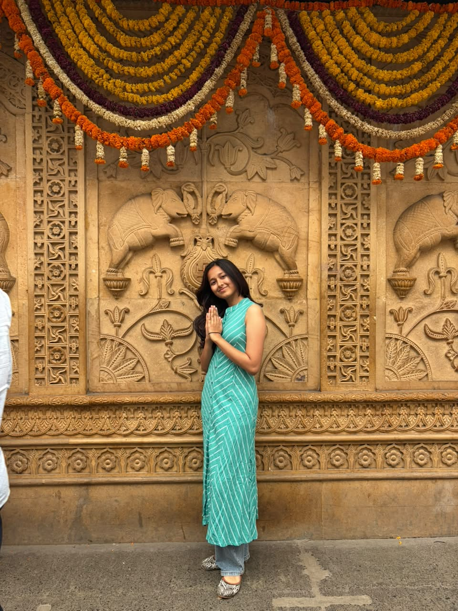
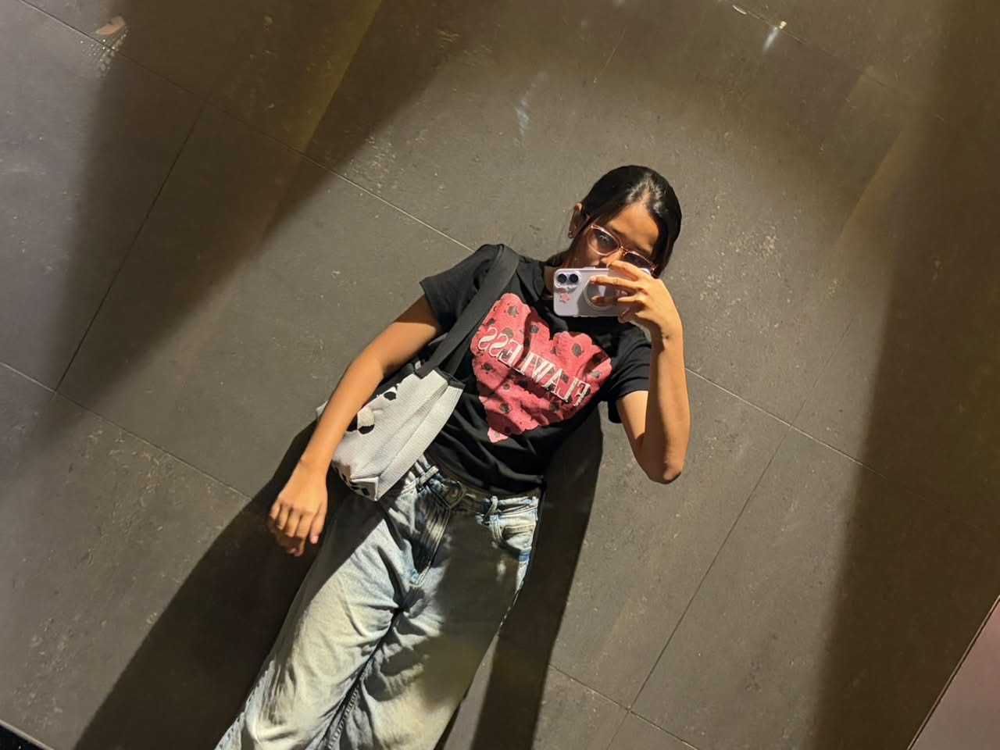
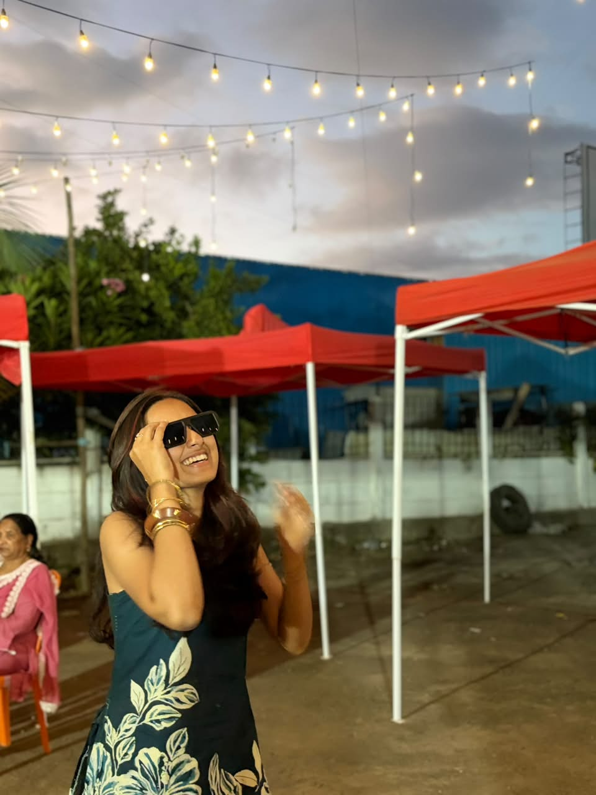
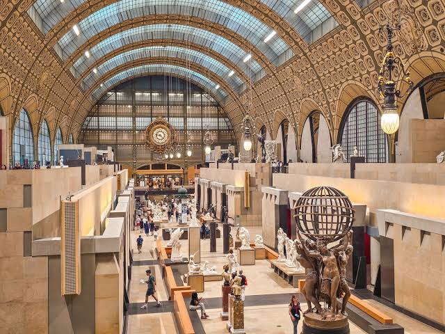

Who Am I
Volume 01 • Story & OriginsHi, I’m Sara Kottawar, a first-year Computer Science student at Newton School of Technology in Pune, India (Class of 2026–2030). I am standing right at the beginning of my engineering journey—deeply curious about how logic becomes software and how early concepts grow into products that genuinely help people.
I don’t pretend to have years of senior engineering experience. Instead, I embrace being in beta: reading documentation, building prototypes from scratch, practicing computational logic, and exploring emerging artificial intelligence tools with open eyes.
- Python
- C++
- JavaScript
- HTML5 & CSS3
- Git & GitHub
- Generative AI
- Figma
- Newton School

get to know me ✦
My Work Includes
Six Areas of Active ExplorationThe core disciplines I explore every week as an aspiring software engineer:
Software Engineering
Writing clean, modular code in Python & C++. Grasping fundamental control flow, functions, OOP, and software debugging practices.
Artificial Intelligence
Investigating Large Language Models, prompt architectures, agentic workflows, and how AI tooling enhances developer productivity.
Creative Web Design
Merging Parisian editorial print art direction with modern CSS grids, semantic markup, and expressive typography.
Product Development
Listening to student challenges, wireframing intuitive flows, and bringing early concepts into live, testable digital prototypes.
Startups & Growth
Analyzing disruptive tech companies, product-led loops, lean experimentation, and how small agile teams ship impactful software.
Logic & Problem Solving
Starting from scratch with computational thinking, logic building, and preparing to dive into fundamental Data Structures.
The Lab
Through rapid prototyping and intentional design, I turn raw curiosities into interactive web experiences, mobile mockups, and software components.
PathFinder
Career Discovery Platform
Dream Vacation
Parisian Travel Site
UrbanPulse AI
SIH 2026 • Team Rubix
StudyPulse
Student Focus Utility
Qualifications
Academic Foundations & MilestonesAcademic Scholar
Newton School of Technology
Bachelor of Technology (B.Tech)
Computer Science & AI

Campus LifeCase Study
I noticed high school seniors and college freshmen frequently experience career paralysis—overwhelmed by fragmented advice and unsure which tech domain aligns with their natural thinking. I designed and coded PathFinder to turn ambiguity into clear, actionable roadmaps.
Website 01 • The Web Portal
Live Prototype PreviewA lightweight, zero-dependency web application engineered with semantic HTML, CSS Grid architecture, and vanilla JavaScript.
Includes an interactive role discovery quiz, milestone checklists for each engineering path, and curated free learning resources.
Curated Feed 02 • Parisian Scrapbook
Beyond The CodeA personal moodboard blending student life at Newton School of Technology, late-night code exploration, and the romantic editorial beauty of Paris:


flâneur de code ✦
wandering through logic & artMobile Experience 03
Adaptive Student FlowDesigned mobile-first so students can explore careers directly on their smartphones during transit, study sessions, or hostel breaks.
- ✦ Creative Web
- ✦ AI & ML
- ✦ Systems & Cloud
- ✓ Python Basics
- ✓ Data Structures
- ○ Full-Stack App
- ★ CS50 Harvard
- ★ Python Docs
- ★ NeetCode 150
Learning Journey
Milestones • 2026 to 2030A transparent chronological record of where I started, what I am currently tackling, and where I am headed next.
-
2026 • The Spark & First Lines
Discovered the Joy of Programming
Wrote my first Python scripts, grasped functions, loops, and condition logic on Newton School of Technology, discovering the pure satisfaction of building software.
-
2026 • The First Build
PathFinder • Student Career Platform
Designed and built my first complete web application from scratch. Exploring the power of semantic HTML, responsive layout architecture with CSS Grid, and client-side state handling with JavaScript.
-
Now • Foundations & Exploration
Newton School of Technology • Class of 2026–2030
Mastering core computer science coursework: programming fundamentals in Python, discrete logic, version control with Git, and integrating modern AI models into developer workflows.
-
Next • Dreaming Beyond Limits
DSA, Full-Stack & Internships
Eager to begin solving Data Structures & Algorithms challenges, build full-stack tools with persistent databases, collaborate on student startup ideas, and secure a software engineering internship.